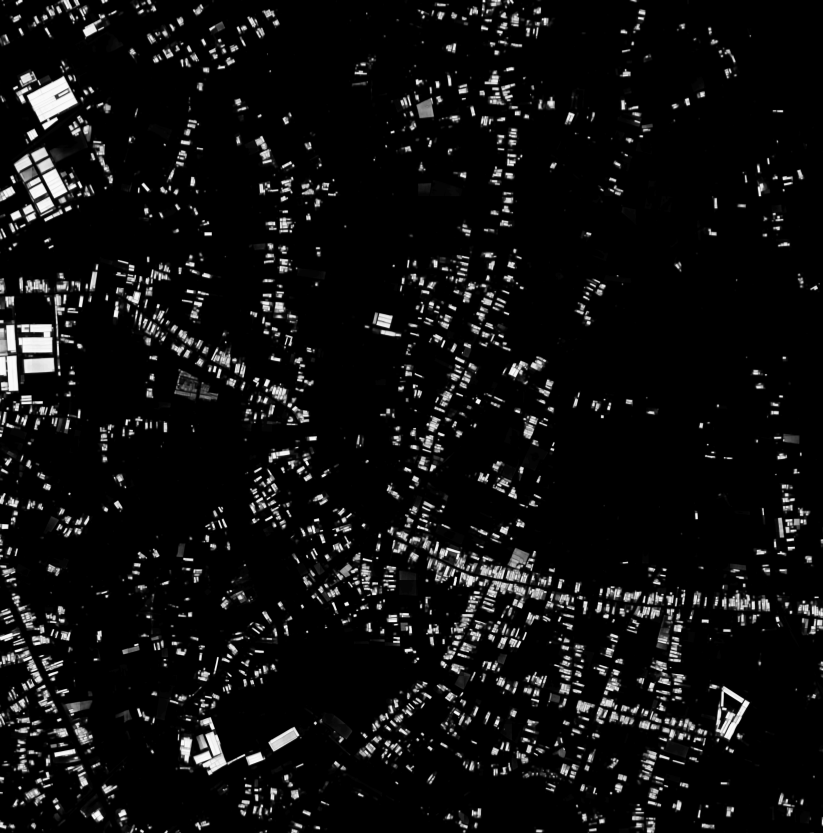
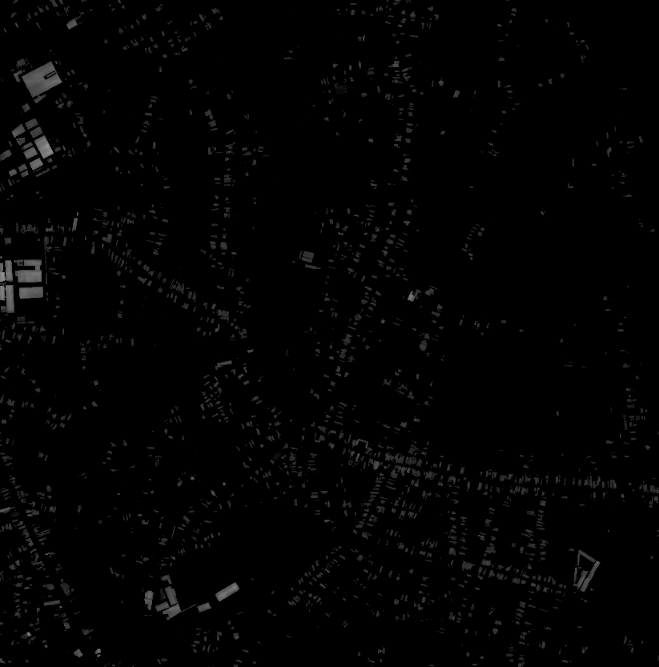
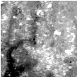
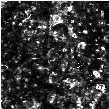
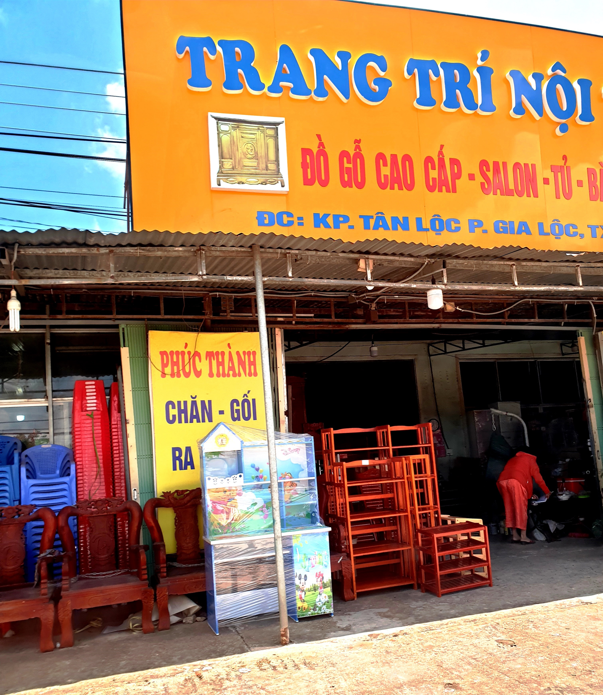

Giới hạn dữ liệu
Vì sao Sentinel-2 không thể cho chi tiết cấp nhà?
Nhà trung vị trong bộ 657 footprint có diện tích khoảng 106,21 m². Ở GSD 10 m, diện tích đó chỉ tương đương 1,0621 pixel. Các hàng dưới 10 m trong bảng là ví dụ toán học để định cỡ nhu cầu, không phải ảnh đã thu.
Dữ liệu thực đã tải
Tệp dữ liệu đang có trong kho C05
Các hình dưới đây là bản xem nhanh của file đã tải, không phải claim ảnh RGB mới cho toàn vùng.





Danh mục nguồn
Nguồn dữ liệu và quyền sử dụng
Kết luận vận hành
Nguồn nào cần làm tiếp?
Báo cáo đầy đủ